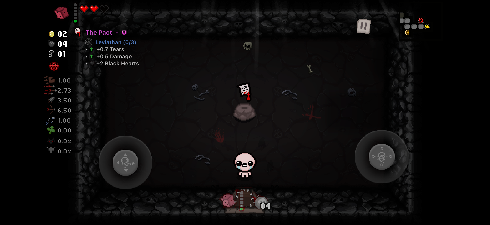

RootlessDEB
Jailbroken devices
Complete ElleKit package with descriptions, icons, and transformation data.
DownloadBring External Item Descriptions to the native iOS version of The Binding of Isaac: Repentance. See what nearby items do, follow transformation progress, and explore your inventory with a compact overlay built for touch.
Get the latest release for your setup. Download buttons follow the newest GitHub release as updates are published.
Latest release available on GitHub
Complete ElleKit package with descriptions, icons, and transformation data.
DownloadApp-specific framework with all required resources. Import it into Isaac’s own tweak folder.
DownloadStandalone dylib and the complete IsaacEID.bundle for a modified, re-signed app.
DownloadAll public build formats, database, documentation, and checksums for advanced setup.
DownloadUse the complete package for your installation method so the description database and visual resources are included. All release files and notes.
Compact outlined text, original EID icons, and live item information.

An EID experience adapted to the native iOS game, from nearby pickups to the next Sacrifice Room payout.
Collectibles, trinkets, cards, runes, identified pills, and Crane Game prizes follow the player and the nearest eligible object.
See all six Dice Room effects and the next Sacrifice Room payout, with the current step from 1/12 through 12/12.
Live item ownership and persisted game counters keep transformation progress current through pickups, item replacement, and save reloads.
Pause a run and tap EID Items to browse collectibles, active items, trinkets, pocket items, and transformations.
Choose among 20 languages and adjust position, scale, opacity, name, icon, quality, and description visibility in EID ⚙.
Native pill knowledge, Curse of the Blind, card visibility, and pickup reachability determine which descriptions should appear.
Back up Isaac’s application data before replacing or re-signing an installation. The release contains the mod and its resources; use your own copy of the game.
Install the rootless DEB with a package manager, import the framework into a LiveContainer private app, or embed the complete package into the app bundle.
The nearest eligible description appears during a run. Artwork and item information disappear together after the item is collected.
Open EID ⚙ from a menu or while paused. Tap EID Items during a paused run to browse the current inventory.
The current release supports the ARM64 App Store 1.4 executable with Repentance v1.7.9b.J754. A game update may require native-layout revalidation.
Bundle identifier com.Nicalis.Isaac-iOS, App Store version 1.4, Repentance v1.7.9b.J754.
Rootless injection uses ElleKit. The core dylib also supports LiveContainer private apps and direct embedding.
An unknown Mach-O UUID disables the overlay before game entities are scanned.
Descriptions, translations, markup, and visual resources are credited to wofsauge and the External Item Descriptions contributors.
An unofficial project, unaffiliated with Nicalis or the original EID maintainers. No game application, DLC, or purchase bypass is included.